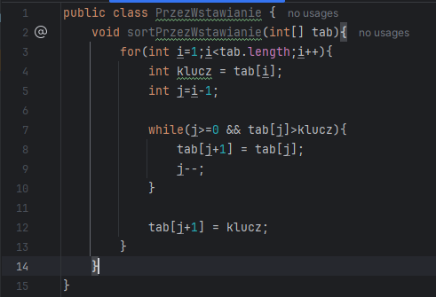
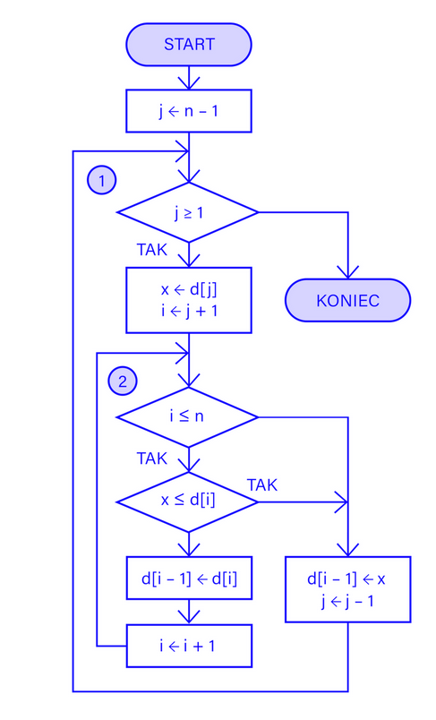
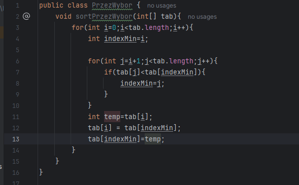
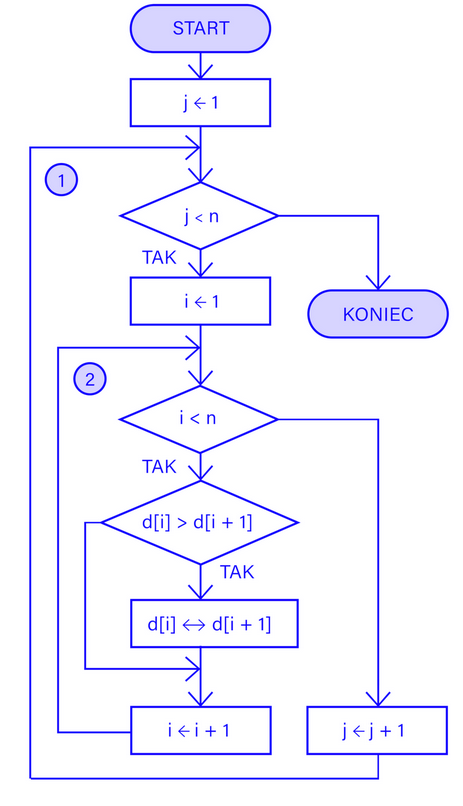
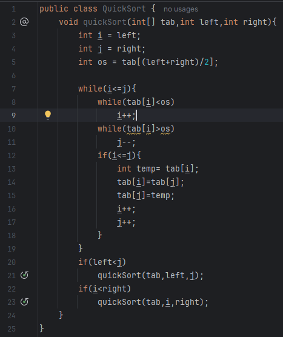
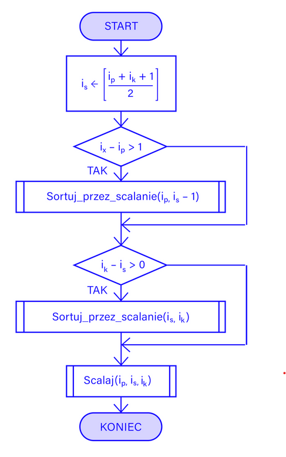
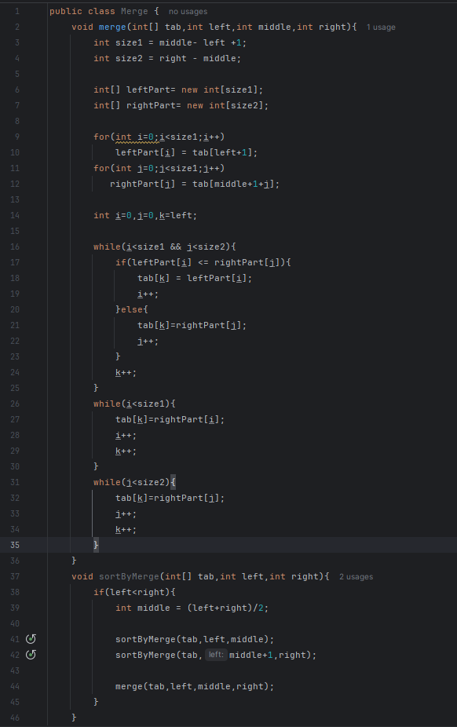
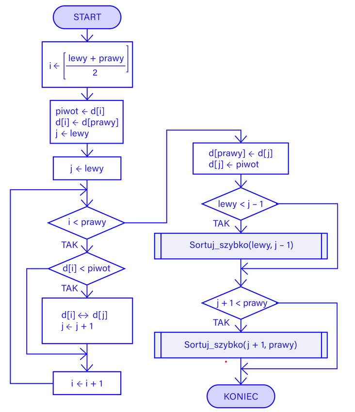
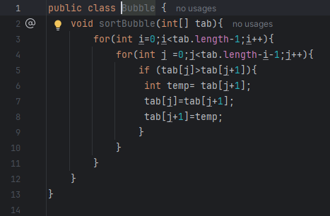
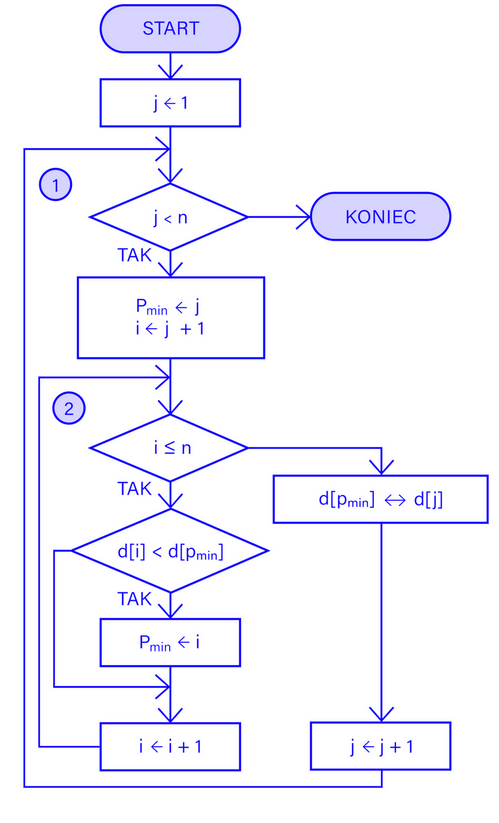

Sortowanie przez wstawianie
- Przejdź przez zbiór od drugiego elementu do ostatniego.
- Wybierz bieżący element i oznacz go jako element do wstawienia.
- Porównuj wybrany element z elementami wcześniejszymi, zaczynając od elementu bezpośrednio przed nim.
- Jeżeli istnieje element przed elementem wybranym i jest od niego większy, przesuń ten element w prawo.
- Wstaw wybrany element w miejsce "dziury" powstałej po przesunięciu elementów większych.
- Powtarzaj kroki 2-5 dla każdego kolejnego elementu w zbiorze.
- Zakończ proces sortowania i wyeksportuj uporządkowany zbiór danych.
|

|

|
Sortowanie przez wybieranie
- Przejdź przez zbiór danych, aby znaleźć najmniejszy element.
- Wymień najmniejszy element z pierwszym elementem zbioru.
- Przejdź do kolejnej pozycji i powtórz proces dla pozostałej części zbioru.
- Kontynuuj, aż wszystkie elementy będą uporządkowane.
|

|

|
Sortowanie szybkie
- Wybierz element pivot (może to być pierwszy, ostatni lub losowy element).
- Podziel zbiór na dwie podgrupy: mniejsze od pivotu i większe od pivotu.
- Rekurencyjnie zastosuj algorytm sortowania do obu podgrup.
- Po posortowaniu podgrup, scal je, umieszczając pivot pomiędzy nimi.
|

|

|
Sortowanie przez scalanie
- Podziel zbiór danych na dwie połówki.
- Rekurencyjnie zastosuj algorytm sortowania przez scalanie dla każdej z połówek.
- Scalaj posortowane połówki w celu utworzenia posortowanego zbioru:
- Utwórz nową tablicę lub listę, która będzie przechowywać scalone elementy.
- Porównuj elementy z obu połówek, zaczynając od ich początków.
- Dodawaj mniejszy element do scalanej tablicy/listy.
- Jeśli jedna z połówek zostanie już w pełni przeanalizowana, dodaj pozostałe elementy z drugiej połowy do scalanej tablicy/listy.
- Powtarzaj te kroki, aż obie połówki zostaną w pełni rozwiązane i wszystkie elementy zostaną umieszczone w scalonej tablicy/liście.
- Zwróć scalony zbiór.
|

|

|
Sortowanie bąbelkowe
- Przejdź przez cały zestaw danych, porównując sąsiednie elementy.
- Jeśli sąsiadujące ze sobą elementy są w złej kolejności (np. element poprzedni jest większy od następnego), zamień je miejscami.
- Powtórz krok 1 dla wszystkich pozostałych elementów, aż dotrzesz do ostatniej pary elementów.
- Po zakończeniu pierwszej iteracji największy element powinien znaleźć się na końcu kolekcji.
- Powtórz kroki 1-4 dla n-1 elementów, gdzie n jest rozmiarem kolekcji.
- Po zakończeniu wszystkich iteracji, cała kolekcja powinna być uporządkowana rosnąco.
|

|

|